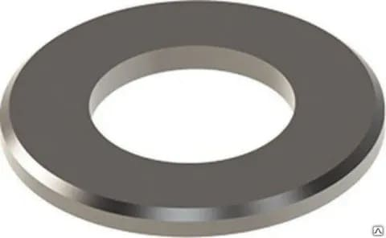

ГОСТ 9065-75 шайба для фланцевых соединений
Стандарт
DIN 93
ГОСТ
ГОСТ 9065-75
Цена от
81,00 ₽
Размерный ряд
Размеры шайб строго регламентированы стандартом и зависят от номинального диаметра резьбы сопрягаемой шпильки. Основные
Шайбы металлические, кольца » ГОСТ 9065-75 шайбы для фланцевых соединений
Варианты и размеры (26)
| Наименование | Размер | Длина, мм | Материал | Покрытие | Цена |
|---|---|---|---|---|---|
| ГОСТ 9065-75 шайба для фланцевых соединений M10 L=11мм | M10 | 11 | 109,00 ₽ | ||
| ГОСТ 9065-75 шайба для фланцевых соединений M100 L=102мм | M100 | 102 | 1 696,00 ₽ | ||
| ГОСТ 9065-75 шайба для фланцевых соединений M110 L=112мм | M110 | 112 | 1 973,00 ₽ | ||
| ГОСТ 9065-75 шайба для фланцевых соединений M12 L=13мм | M12 | 13 | 126,00 ₽ | ||
| ГОСТ 9065-75 шайба для фланцевых соединений M120 L=122мм | M120 | 122 | 2 271,00 ₽ | ||
| ГОСТ 9065-75 шайба для фланцевых соединений M125 L=127мм | M125 | 127 | 2 427,00 ₽ | ||
| ГОСТ 9065-75 шайба для фланцевых соединений M140 L=142мм | M140 | 142 | 2 927,00 ₽ | ||
| ГОСТ 9065-75 шайба для фланцевых соединений M16 L=17мм | M16 | 17 | 163,00 ₽ | ||
| ГОСТ 9065-75 шайба для фланцевых соединений M160 L=162мм | M160 | 162 | 3 664,00 ₽ | ||
| ГОСТ 9065-75 шайба для фланцевых соединений M20 L=21мм | M20 | 21 | 203,00 ₽ | ||
| ГОСТ 9065-75 шайба для фланцевых соединений M22 L=23мм | M22 | 23 | 224,00 ₽ | ||
| ГОСТ 9065-75 шайба для фланцевых соединений M24 L=25мм | M24 | 25 | 246,00 ₽ | ||
| ГОСТ 9065-75 шайба для фланцевых соединений M27 L=28мм | M27 | 28 | 281,00 ₽ | ||
| ГОСТ 9065-75 шайба для фланцевых соединений M30 L=31мм | M30 | 31 | 317,00 ₽ | ||
| ГОСТ 9065-75 шайба для фланцевых соединений M36 L=37мм | M36 | 37 | 395,00 ₽ | ||
| ГОСТ 9065-75 шайба для фланцевых соединений M42 L=43мм | M42 | 43 | 481,00 ₽ | ||
| ГОСТ 9065-75 шайба для фланцевых соединений M48 L=50мм | M48 | 50 | 580,00 ₽ | ||
| ГОСТ 9065-75 шайба для фланцевых соединений M52 L=54мм | M52 | 54 | 646,00 ₽ | ||
| ГОСТ 9065-75 шайба для фланцевых соединений M56 L=58мм | M56 | 58 | 716,00 ₽ | ||
| ГОСТ 9065-75 шайба для фланцевых соединений M60 L=62мм | M60 | 62 | 789,00 ₽ | ||
| ГОСТ 9065-75 шайба для фланцевых соединений M64 L=66мм | M64 | 66 | 865,00 ₽ | ||
| ГОСТ 9065-75 шайба для фланцевых соединений M68 L=70мм | M68 | 70 | 944,00 ₽ | ||
| ГОСТ 9065-75 шайба для фланцевых соединений M72 L=74мм | M72 | 74 | 1 027,00 ₽ | ||
| ГОСТ 9065-75 шайба для фланцевых соединений M76 L=78мм | M76 | 78 | 1 113,00 ₽ | ||
| ГОСТ 9065-75 шайба для фланцевых соединений M80 L=82мм | M80 | 82 | 1 202,00 ₽ | ||
| ГОСТ 9065-75 шайба для фланцевых соединений M90 L=92мм | M90 | 92 | 1 439,00 ₽ |